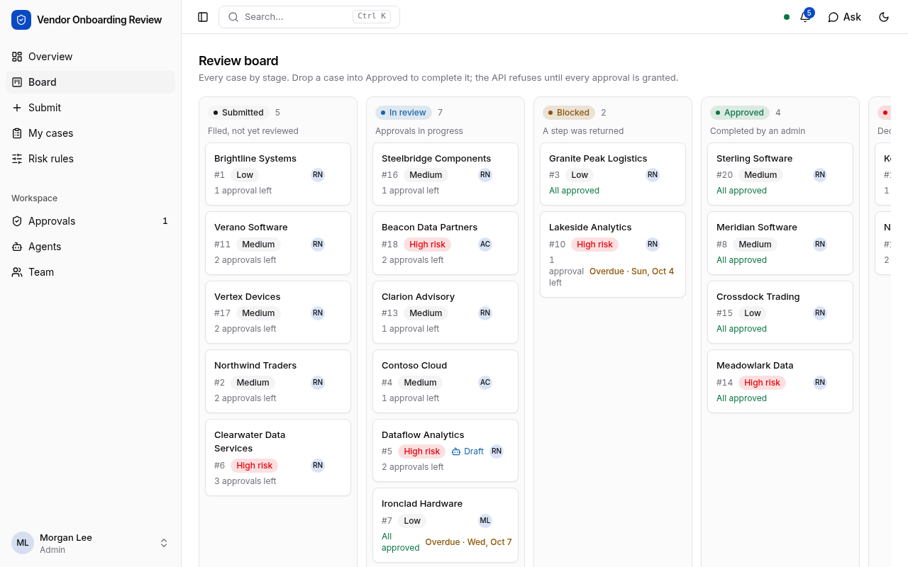
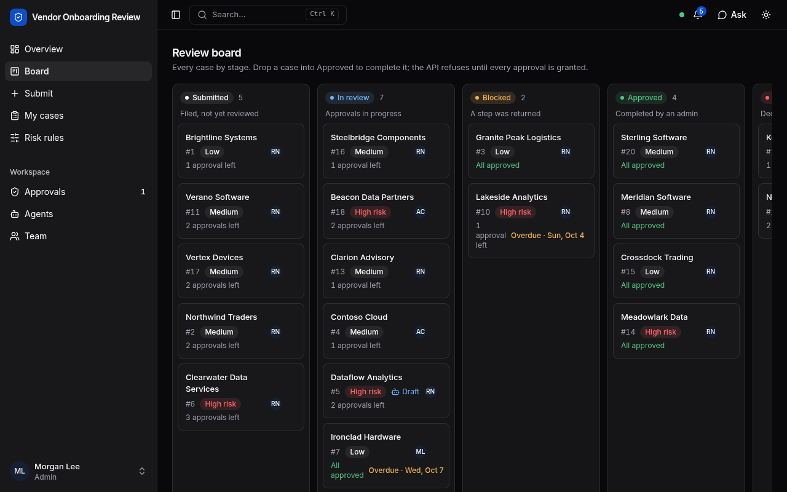

A governed procurement backend that risk-tiers each vendor from one versioned rule set, derives the approvals that tier needs, and blocks completion at the API layer until every required approval is granted by the right role.


This is the governed backend under a plausible AI-built vendor-onboarding tool, made safe to run in production. The business logic lives in one readable API layer. A reviewer can open the completion endpoint and see exactly why a high-risk vendor needed an admin sign-off, and why an incomplete case was refused.
A versioned scoring table decides a vendor's risk tier. The rule lives in exactly one place, called by both submit and rescore.
The tier derives the approvals the case needs. High risk adds an admin step the lower tiers never see.
Completion is refused, with an audit line, until every required approval is granted. The gate holds even through an agent's request.
Clone it, then run it on your machine with no account, or on a cloud link for ChatGPT and Claude.
git clone https://github.com/xano-scratch/vendor-onboarding-review
cd vendor-onboarding-review
npm install
npm run xano:deploy # deploys and seeds on the Xano Engine on your machine
npm run dev # opens the app, then click "Continue as Morgan"For a cloud link that works with ChatGPT and Claude connectors:
npx xanosdk login
npm run xano:deploy:ephemeralPaste this to a coding agent to explore the governed layer:
Clone https://github.com/xano-scratch/vendor-onboarding-review and read it.
It is a Xano backend (TypeScript, @xano/sdk) with a React frontend. The business
rules are in xano/rbac.ts, xano/function/score_vendor.ts, and
xano/query/onboarding/writes.ts. Explain how a vendor's risk tier derives its
required approvals, and how the complete endpoint gates an incomplete case.| Role | Can | Cannot |
|---|---|---|
requester | File vendors, track their own cases | See the full queue, approve, complete, manage rules |
approver | Work the queue, clear the steps that match their role, read any case | Act on an admin step, complete a case, manage rules |
admin | Everything: admin steps, complete, rescore, publish rules, manage the team |
Every domain endpoint is under api:onboarding/* and needs a signed-in token. Access is checked per endpoint by role, not by row-level security.
| Verb | Path | Who | Enforces |
|---|---|---|---|
| GET | /queue | approver, admin | The queue with each case's outstanding count |
| GET | /submissions/mine | signed in | The caller's own cases only |
| GET | /submissions/{id} | owner or reviewer | One case; 404 if not yours and you can't read all |
| POST | /submissions | requester+ | Scores the vendor, derives the tier's approvals |
| POST | /submissions/{id}/approvals/{approval_id}/approve | role matches the step | Advances the case, writes an approve event |
| POST | /submissions/{id}/complete | admin | The gate: refuses until every approval is granted |
| POST | /rules/activate | admin | Publishes a new rule version, retires the prior one |
A permissioned MCP server exposes the app's jobs, so an agent works the queue under the same rules a person does. Each agent gets its own scoped, expiring, revocable key, and every call is logged.
list_review_queue, get_case, score_preview (read)submit_vendor (the person's own routine intake)approve_step, complete_case (drafted for a person to approve in the app)